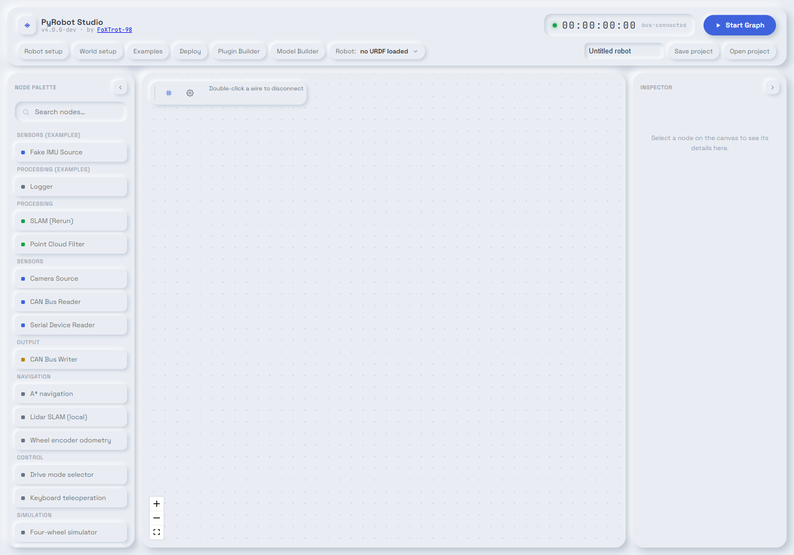
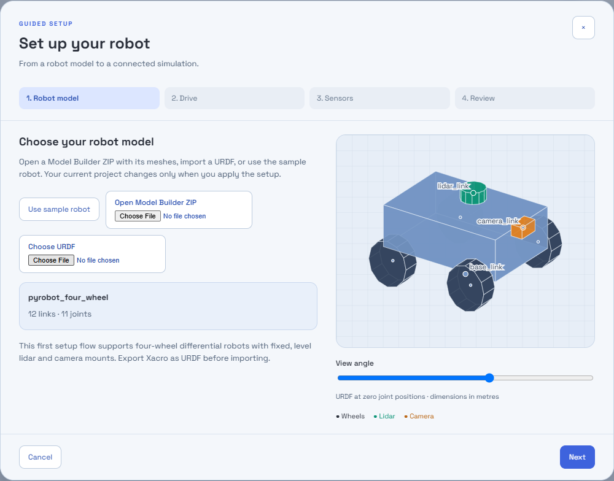
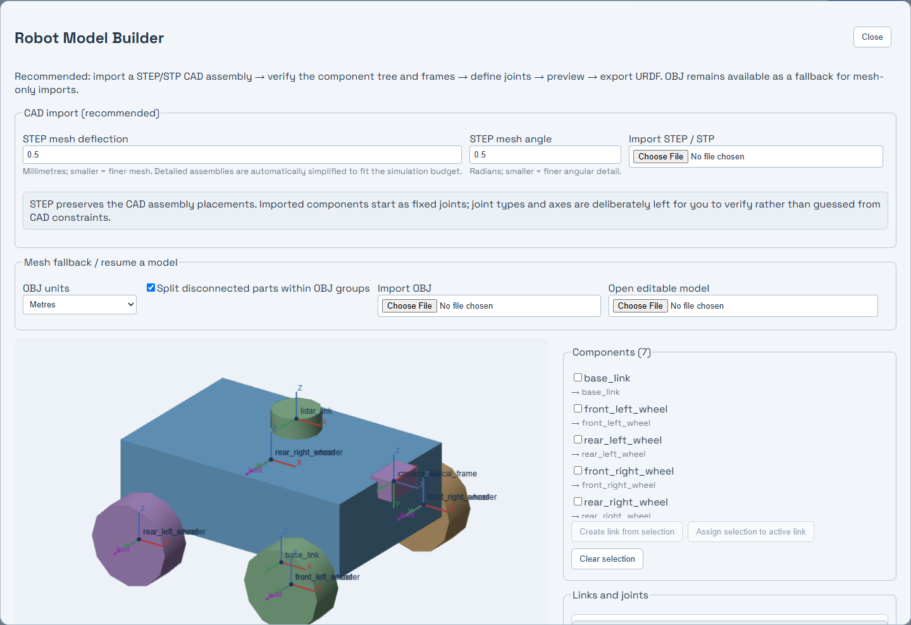
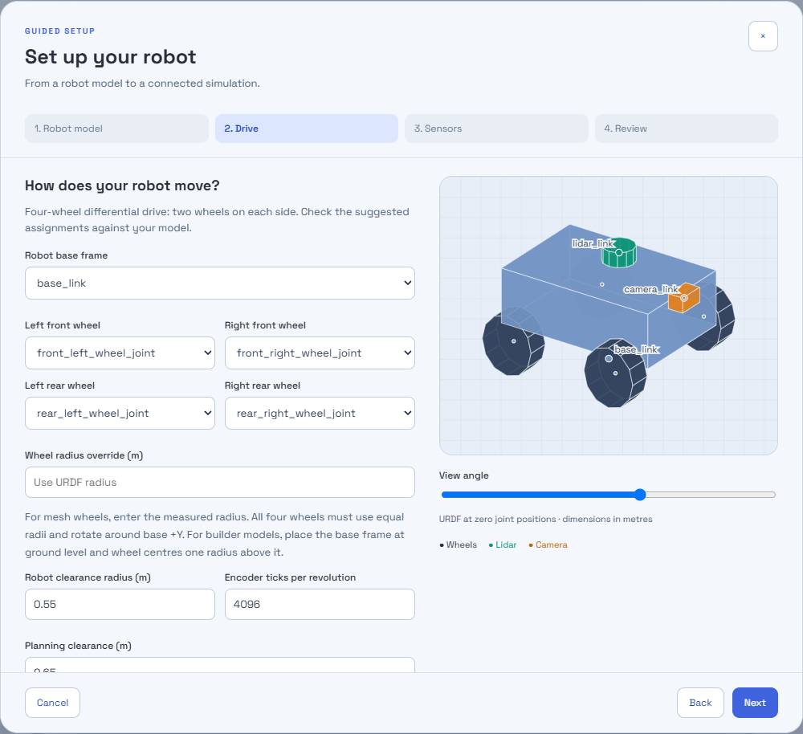
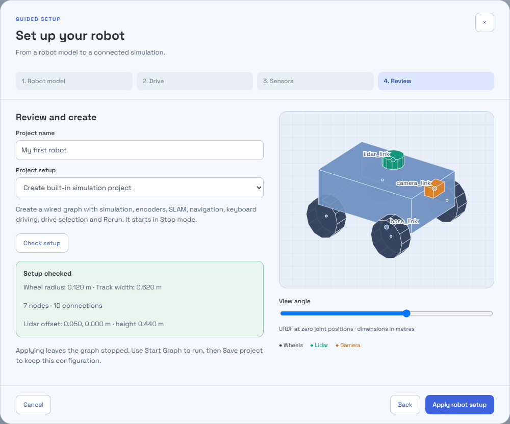
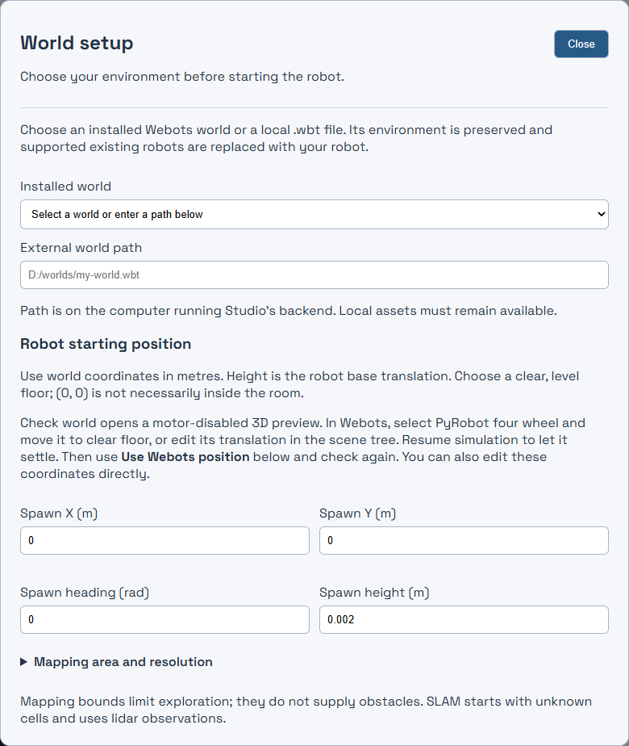
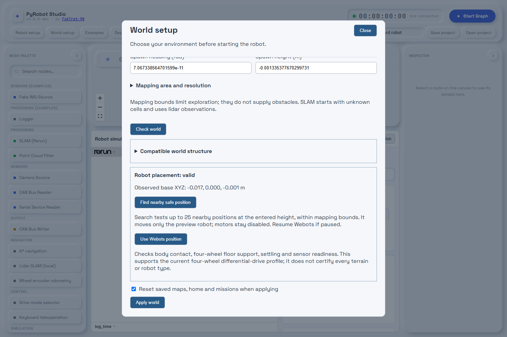
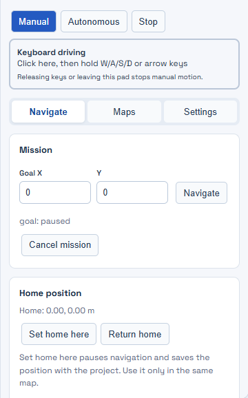
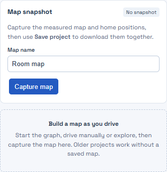

Getting started with PyRobot Studio

A saved project containing your robot, a connected simulation graph, and the settings needed to reopen it. Start with the sample robot, then follow the same workflow for your own supported model.
Install · 2 Choose model · 3 Own CAD · 4 World · 7 Drive · 9 Save & help · 11
Created by Kanishka Kularathna · FoXTrot-98
Project-owned guide and screenshots: Apache-2.0. Screenshots show the development UI; sample values are examples, not settings for every robot.
This is a developer-run application, not a desktop installer. If Studio already opens, skip to page 3. The locally verified platform is Windows.
Install Git, 64-bit Python 3.14.6, Node.js 24.18.0 and npm, matching this repository's baseline. Download or clone the project, then open PowerShell in its root folder.
py -3.14 -m venv .venv .\.venv\Scripts\python.exe -m pip install -r requirements.lock.txt .\.venv\Scripts\python.exe -m pip check cd frontend npm.cmd ci npm.cmd run build cd ..
.\.venv\Scripts\python.exe -m uvicorn backend.app.main:app --host 127.0.0.1 --port 8000
cd frontend npm.cmd run dev -- --host 127.0.0.1 --port 5173 --strictPort
Webots is optional for your first run. Install a compatible Webots R2025 release to use Webots physics and external worlds. The built-in simulator needs no Webots installation.
Do not add unrestricted backend --reload when using Webots: generated controller files can trigger a backend restart. Detailed installation reference: README.md and docs/BASELINE.md.
On a fresh session, click Robot setup. If a project is already open, stop it and save it first. Applying a new simulation can replace the current graph.

| You have… | Use this route |
|---|---|
| No robot file yet | Use sample robot, then Next. This is the quickest way to learn the controls. |
| A Studio builder ZIP | Open Model Builder ZIP. The bundle must contain its editable builder model. |
| A supported URDF | Choose URDF. A loose URDF does not automatically bundle its external mesh files. |
| A STEP/STP or OBJ model | Use Model Builder first; follow page 4. |

examples/model-builder/four-wheel-rover.robot-builder.json using Open editable model.CAD textures/material finishes and measured dynamics are not imported. Simplify dense models: embedded assets are limited to 20,000 triangles and 6 MiB of compact asset JSON; builder ZIP upload is limited to 8 MiB. See docs/MODEL_TO_SIMULATION.md.

Expand this section to enter body mass, mass per wheel, motor limits, damping, friction and slip. Body mass excludes the wheels.
Equal wheel radii. Four distinct joints. Correct pivots. All other joints fixed. Do not reduce clearance merely to bypass a validation error.
Physics settings are approximate and apply to Webots, not the built-in geometric simulator. They are not measured automatically from CAD.
In Sensors, choose the fixed lidar and camera mounting frames. Use the camera mount frame, not an optical frame with different axes. For the sample: lidar_link and camera_link.

| Project setup | When to choose it |
|---|---|
| Create built-in simulation project | First run in the generated room. Fast geometric simulation; no Webots required. |
| Create Webots simulation project | Webots physics or an external Webots world. Requires Webots installed. |
| Update robot in current graph | Keep an existing graph and replace its robot configuration. |

.wbt path on the backend computer.World setup can also be used before Robot setup. In that case, return here after configuring the robot to check its physical placement. Changing worlds resets saved maps, home positions and missions.

A compatible world structure is only the first check. Physical support, body/wheel contact, settling and sensor readiness must also pass. Startup repeats these checks. A valid spawn does not qualify all terrain or prove a complete navigation route.
W A S D
W / ↑ forward
S / ↓ reverse
A / ← and D / → turn
Space: zero velocity

Black cells are occupied; gray cells are unknown; light cells are measured free space. Mapping starts from sensor observations, not from a perfect copy of the Webots world.
The first map pose becomes home by default. At a suitable known position, Set home here saves a new home and pauses navigation.
On the SLAM waypoints map, click a nearby clear destination, then Run waypoints. Draft clicks alone do not start motion.
Explore map selects reachable frontiers. It returns after the configured target limit or when no eligible frontiers remain.
Return home requests a route back and alignment to the home heading. Home reached means stopped at the estimated home; it is not docking.
| Control / status | Meaning |
|---|---|
| Pause motion / Resume motion | Pause or resume the current autonomous mission. |
| Cancel mission | Stop that mission. Choose a new mission to move again. |
| no_path / obstacle_stop | Wait stopped while fresh map data and replanning may clear the blockage. |
| navigation_failed / stalled | Inspect the robot and route. Clear the cause, then use Retry navigation or choose a new goal. |
| sensor_timeout | Motion is stopped while waiting for fresh mapping data. |
In Settings, the available planners are A* and Dijkstra; controllers are proportional and fuzzy logic. Begin with the defaults. Changing algorithms does not fix a wrong wheel radius, unsupported placement or drifting localization.

| Problem | First thing to check |
|---|---|
| Setup button disabled | Stop Graph and wait for the current operation to finish. |
| Duplicate wheels / unsupported model | Four distinct moving wheel joints, equal radii, base +Y axes and fixed sensor mounts. |
| Placement stays invalid | Resume Webots if paused; inspect body contact and all four wheels. Adopt a safe observed pose, then recheck. |
| Robot will not drive | Wait for sensor readiness, select Manual and focus the keyboard pad. |
| No route / repeated stops | Choose a nearby open goal; keep configured clearance. Map more space manually if needed. |
| Changes disappeared | Apply the setup first, then Save project. Unsaved drafts are not the project. |
✓ Model scale and frames checked ✓ Wheel assignments checked
✓ World placement valid, if used ✓ Short manual drive passed
✓ Short mission and return tested ✓ Project saved and reopened
More detail in the repository: docs/GUIDED_ROBOT_SETUP.md, docs/MODEL_TO_SIMULATION.md, docs/SIMULATION_WORLDS.md and docs/AUTONOMOUS_NAVIGATION.md. Report problems using CONTRIBUTING.md; include world, robot, steps and logs.